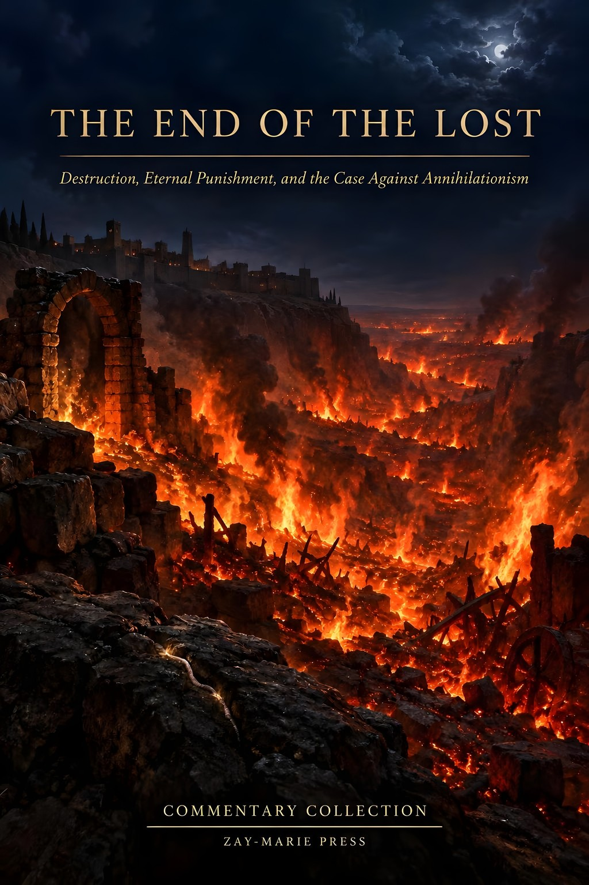
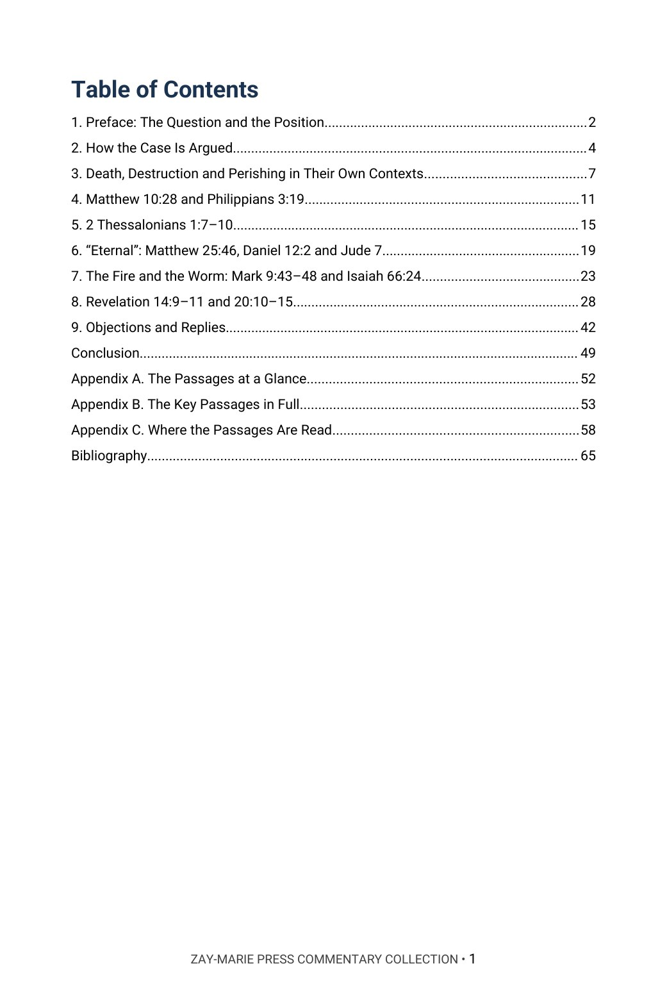
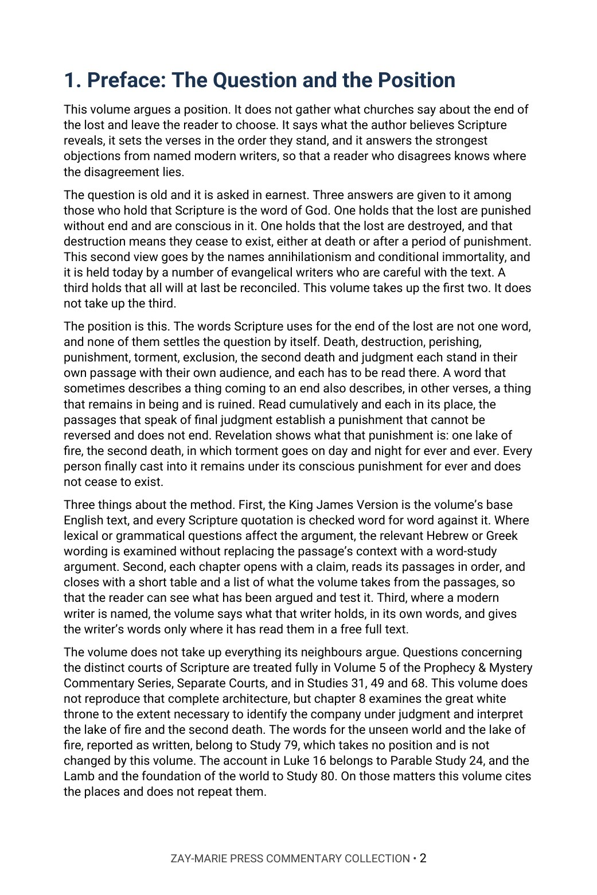
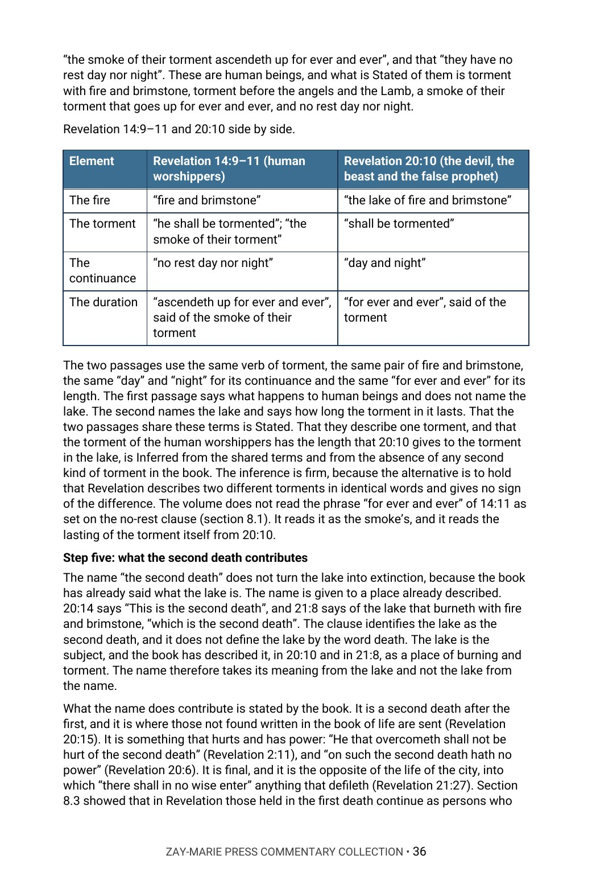
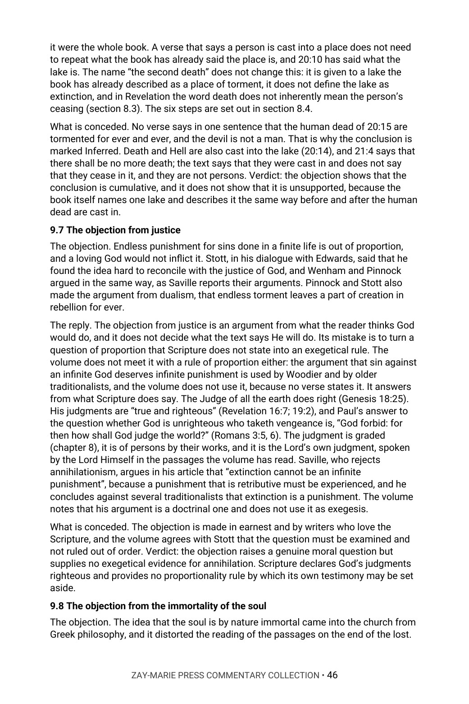

The End of the Lost
Destruction, Eternal Punishment, and the Case Against Annihilationism
Does the Bible’s language of destruction mean that the lost cease to exist, or does it describe a punishment that does not end?
Scripture speaks of the lost in the words of death, destruction, perishing, punishment, torment, exclusion and the second death. Some careful writers read those words as the end of existence; others read them as a punishment without end. What does each passage say, in the setting where it stands, and what do the passages say when they are read together?
It argues that destruction language does not by itself establish annihilation, that its meaning is fixed by context, and that the passages taken together establish irreversible, everlasting punishment: Revelation describes human beings under torment without rest, identifies the lake of fire as the second death and names that lake as the place of torment day and night for ever and ever. Those finally cast into it do not cease to exist. The case is cumulative and never rests on one Greek word or one proof text. In Chapter 9 it sets its reading beside modern writers on both sides and rules on each objection.
New to the framework? The Digital Studies teach the distinctions this volume relies on. Start with the Digital Studies →
A Commentary That Argues a Position
This volume does not gather what churches say about the end of the lost and leave the choice to the reader. It says what the author believes Scripture reveals, sets the verses in the order they stand, and answers the strongest objections from named modern writers, so that a reader who disagrees knows where the disagreement lies.
It stands alone in the Commentary Collection and belongs to no series. It takes one question: whether the final punishment of the lost is their ceasing to exist. It is a different kind of book from the Digital Studies, which report what a passage says. Scripture is quoted from the King James Version throughout, checked word for word. The Lord’s words in the Gospels were spoken to Israel in His Kingdom ministry, and the visions of Revelation name the audience they were sent to; the volume reads them there and does not turn them into a warning to the Body of Christ.
Related Reading
Digital Studies
Study 79 — The Realms of the Dead Reports Sheol, Hades, Gehenna and the lake of fire as written and takes no position; this volume argues what the final punishment is.
Study 31 — The Judgments of Scripture Reports the judgments of Scripture in their settings; this volume argues the end of the lost.
Study 68 — The Book of Life Traces the book of life through the passages that name it; this volume reads Revelation 20:11–15 for the punishment that follows.
Parable Studies
Parable Study — The Rich Man and Lazarus Reads Luke 16:19–31 as its own edition; this volume cites it only as the Lord’s account of the dead.
Parable Study — The Sheep and the Goats Reads Matthew 25:31–46 as its own edition; this volume reads the closing verse for the word “eternal.”
Commentary Series
Prophecy & Mystery Commentary, Volume 5 — Separate Courts Argues who is judged where and why Scripture does not merge the courts; this volume argues what the final punishment is.
Gospel Commentary Series, Volume 3 — The Olivet Discourse Argues the Olivet Discourse as Israel’s; this volume reads Matthew 25:31–46 for what it says of the punishment.
Bible Book Companion Series
Bible Book Companion — Revelation Interprets the book of Revelation through its key passages.
Bible Book Companion — Matthew Interprets the book of Matthew through its key passages.
Bible Book Companion — 2 Thessalonians Interprets the book of 2 Thessalonians through its key passages.
From the Words of Destruction to the Lake of Fire
How the Case Is Argued
See how each claim is stated, the passages read in order, and how the evidence is marked Stated, shown by the context or Inferred.
The Words in Their Contexts
Follow death, destruction and perishing through passages where the same word names an ending and a ruin of something that remains.
Matthew 10:28 and 2 Thessalonians 1:7–10
Read the power to destroy soul and body, and everlasting destruction from the presence of the Lord, in the sentences that surround them.
“Eternal,” the Fire and the Worm
Set Matthew 25:46, Daniel 12:2 and Jude 7 beside Mark 9:43–48 and Isaiah 66:24, and weigh the two readings of each.
Revelation 14:9–11 and 20:10–15
Trace the one lake of fire across the passages that name it, the second death, and who stands at the great white throne.
Objections and Replies
Weigh modern writers on both sides, each objection stated and answered from the text, with a verdict on each.
Read the Word in Its Context
Matthew 10:28
“And fear not them which kill the body, but are not able to kill the soul: but rather fear him which is able to destroy both soul and body in hell.”
Matthew 25:46
“And these shall go away into everlasting punishment: but the righteous into life eternal.”
Mark 9:48
“Where their worm dieth not, and the fire is not quenched.”
2 Thessalonians 1:9
“Who shall be punished with everlasting destruction from the presence of the Lord, and from the glory of his power;”
Revelation 14:11
“And the smoke of their torment ascendeth up for ever and ever: and they have no rest day nor night, who worship the beast and his image, and whosoever receiveth the mark of his name.”
Revelation 20:10
“And the devil that deceived them was cast into the lake of fire and brimstone, where the beast and the false prophet are, and shall be tormented day and night for ever and ever.”
Revelation 20:15
“And whosoever was not found written in the book of life was cast into the lake of fire.”
Revelation 21:8
“But the fearful, and unbelieving, and the abominable, and murderers, and whoremongers, and sorcerers, and idolaters, and all liars, shall have their part in the lake which burneth with fire and brimstone: which is the second death.”
What This Book Sets Out to Do
The word of destruction does not decide the question; the sentence around it does.
The volume asks of every verse who is addressed, what has just been said, and what the verse says follows, before it says what the passages establish when they are read together.
Preview the Volume Before You Purchase
Click any page to enlarge it for reading.


Table of Contents
See the full order of the argument, from the Preface to the Bibliography.


Preface
See the question stated plainly, the three answers given to it and how the volume proceeds.


The Argument at Work
See the method: Revelation 14:9–11 and 20:10 set side by side, what is Stated and what is Inferred.


Objections and Replies
See modern writers named, each objection stated, answered and given a verdict.
A Full Commentary on the End of the Lost
66-Page Digital PDF
Cover and a fully numbered interior.
Nine Chapters and a Conclusion
From the Preface and the method to the lake of fire, the objections and replies, and the conclusion.
Objections and Replies
Modern writers named on both sides, each objection answered first and then proved from the text.
Passage by Passage
Matthew 10, Matthew 25, Mark 9, 2 Thessalonians 1, Revelation 14 and Revelation 20 and 21 read in order, with what each states.
Comparison Tables
The passages set side by side, with the KJV text and what to observe.
Conclusion
The position restated in full, with a closing table.
Appendices
The passages at a glance, the key passages in full and a verse-by-verse index of where the passages are read.
Bibliography
Every work cited, listed by author and title.
The End of the Lost
66-page digital PDF · For personal use